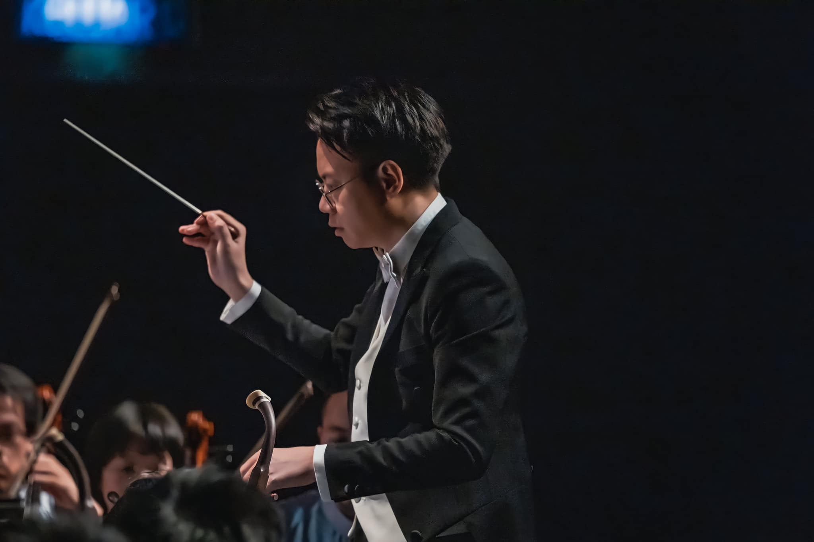
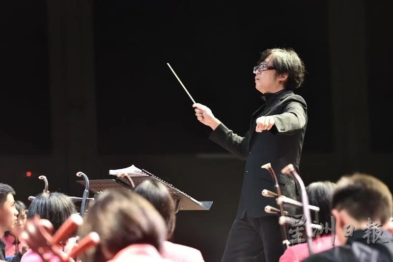
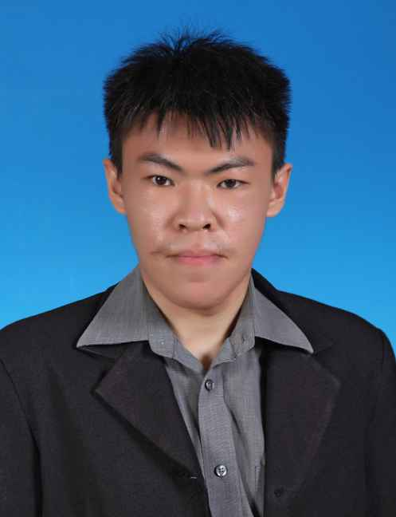
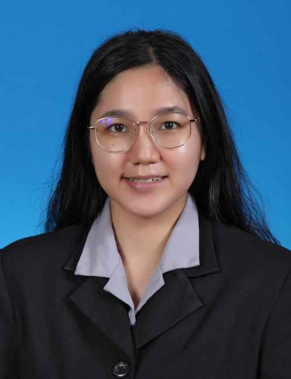

2023年执委团
主席 何莉淇
副主席 钟嫣柔 黄樟则
文书 林佳桐（正） 刘语昕（副）
财政 郑湋祺（正） 茹喜悦（副）
总务 罗正伟（正） 许媛婷、王彦璇（副）
场地 徐嘉敏（正） 林秦伊、徐以函（副）
乐器管理 蔡加珆（正） 李芯桐、许芷瑜（副）
乐谱管理 黄柯晴（正） 颜彣儿（副）
学术 陈欣瑜（正） 梁凯琦、张愷恩、谢昕妍（副）
康乐 陈奕妤（正） 朱恩彤（副）
纪律 温以儇（正） 李依羡（副）
指挥 王小航
2023年水准团
各组首席
拉弦声部 钟嫣柔（正） 徐以涵、茹喜悦（副）
弹拨声部 李芯仪（正） 梁焮萱（副）
吹管声部 邓霈雯（正） 何莉淇、罗正伟（副）
敲击声部 黄樟则（正） 李依羡（副）林起云（指导）
阮组 梁焮萱（正） 黄美霖（副）陈奕妤（指导）
柳琴组 罗宝恩
杨琴组 李芯仪
琵琶组 李芯桐（正）刘语昕（副）
二胡组 徐以函（正） 许芷瑜（副）
中胡组 钟嫣柔（正）
高胡组 李芯仪（正）茹喜悦（副）
Cello组 杨善文
Bass组 林佳桐
笛子组 何莉淇（正）徐嘉敏（副）
唢呐组 邓霈雯（正）许媛婷（指导）
笙组 罗正伟（正）温以儇（指导）
教练介绍
1. 张凯明教练
张凯明教练是现任马来西亚世纪华乐团MCCO的音乐总监、吉隆坡坤成中学华乐团的教练、多媒体大学MMU（赛城）和赫瑞-瓦特大学Heriot-Watt（马来西亚分校）华乐班指导。

2. 吴淑亮教练
吴淑亮教练曾多次担任各中小学及大学华乐团音乐文化活动策划人、艺术总监及音乐总监。他以多媒体与音乐结合，使传统音乐更生动。

顾问老师
陈凯恩师

罗嘉骏师

叶依婉师
庄观清师